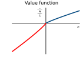
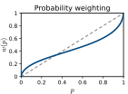

Microeconomic analysis
Gedas Beržinskas, Adrijus Skuodas, Jokūbas Žitkevičius
Supervisor: Assoc. Prof. Dmitrij Celov
A lottery specifies possible outcomes and their probabilities:
The game draws the number of diamonds you get:
A villager offers instead: 2 diamonds for sure for the unmined ore.
Assign each outcome $x$ a utility $u(x)$, where $u:\mathcal{X}\rightarrow\mathbb{R}$. The expected utility of a lottery is
The model predicts that
This representation is justified by the von Neumann–Morgenstern expected utility theorem. Preferences must be:
If $L\succeq M$, then for any lottery $N$ and $0<\alpha<1$,
Adding the same lottery component to both options should not reverse their ranking.
Suppose $L\succeq M$. Independence requires
Under expected utility, the difference between the two mixtures is
Since $\alpha>0$, the sign of the difference is unchanged.
Before we name the paradox — make the choice yourself
The tavern keeper slides a coin across the table and names his game: he flips until it lands tails, and every heads doubles the crowns already in the pot. The pot keeps growing for as long as your luck holds. How much would you pay for the seat?
Close it with ✕ to come back here.
With wealth $w$ and $u(x)=\ln x$, the maximum price $p$ solves
$$ \sum_{k=1}^{\infty}2^{-k}\ln\!\big(w+2^{k}-p\big)=\ln w . $$| Wealth $w$ | Price $p$ |
|---|---|
| 10 | 4.97 |
| 100 | 7.79 |
| 1 000 | 10.95 |
| 1 000 000 | 20.87 |
(numerical solution, see Appendix)
Before we name the paradox — make the choice yourself
A caravan trader offers you one of two sealed lockboxes instead of payment. Both are heavy, both are yours the moment you choose, and the road through raider country decides what actually reaches the coast. Which one do you carry?
Close it with ✕ to come back here.
Question 1. Which do you take?
Question 2. Two deep-Wilderness trips. Which do you take?
Amounts in thousands of gp; normalize $u(0)=0$. Expected utility gives:
$$ \begin{align*} A\succ B &\iff u(2400) > 0.33\,u(2500)+0.66\,u(2400)\\ &\iff 0.34\,u(2400) > 0.33\,u(2500),\\[4pt] C\succ D &\iff 0.33\,u(2500) > 0.34\,u(2400). \end{align*} $$ $$ 0.34\,u(2400)>0.33\,u(2500)>0.34\,u(2400)\qquad \bot $$Consider four lotteries $L_1,L_2,L_3,L_4 \in \mathcal{L}$ over outcomes $x_1,x_2,x_3 \in \mathcal{X}$.
Each lottery is represented by a probability distribution:
$$ L_j=\{(x_i,p_{ij})\}_{i=1}^3, \qquad \sum_{i=1}^3p_{ij}=1. $$Under expected utility, these preferences require
$$ \sum_{i=1}^3p_{i1}u(x_i)> \sum_{i=1}^3p_{i2}u(x_i), $$ $$ \sum_{i=1}^3p_{i4}u(x_i)> \sum_{i=1}^3p_{i3}u(x_i). $$Without loss of generality, suppose the observed preferences satisfy
$$ L_1\succ L_2,\qquad L_4\succ L_3. $$For some $\alpha\in(0,1)$, let
$$ L_3=\alpha L_1+(1-\alpha)N,\qquad L_4=\alpha L_2+(1-\alpha)N. $$By the independence axiom, $L_1\succ L_2$ implies $L_3\succ L_4$. This contradicts the observed preference $L_4\succ L_3$.
Let $x_H>x_M>x_0$, $p,q\in(0,1)$, and define
$$ \begin{aligned} \mathcal{P}_A&=\delta_{x_M},& \mathcal{P}_B&=p\delta_{x_H}+(1-p)\delta_{x_0},\\ \mathcal{P}_C&=q\delta_{x_M}+(1-q)\delta_{x_0},& \mathcal{P}_D&=pq\delta_{x_H}+(1-pq)\delta_{x_0}. \end{aligned} $$Suppose
$$ \mathcal{P}_A\succ\mathcal{P}_B, \qquad \mathcal{P}_D\succ\mathcal{P}_C. $$Expected utility, with $u(x_0)=0$, implies
$$ \begin{aligned} u(x_M)&>p\,u(x_H),\\ pq\,u(x_H)&>q\,u(x_M) \;\Longrightarrow\; p\,u(x_H)>u(x_M). \end{aligned} $$ $$ \boxed{u(x_M)>p\,u(x_H)>u(x_M)} \qquad\bot $$$P_A$: villager trade, 30 diamonds for sure.
$P_B$: deep cave, 40 diamonds w.p. 0.8 (a creeper w.p. 0.2).
Same plans, but you first need to find a stronghold (w.p. $q=0.25$):
$P_C$: 30 w.p. 0.25 $P_D$: 40 w.p. $0.25\times0.8=0.20$.
Before we name the paradox — make the choice yourself
A fixer slides a crate of 90 chips across the table. Thirty are stamped with a red seal; the other sixty are split between two marks nobody at the table will name. Place your bet on the mark you draw.
Close it with ✕ to come back here.
30 rubies; 60 emeralds or sapphires in an unknown mix. Draw one blindly; win 100 gold if your bet is right.
| Bet | Ruby (30) | Emerald (?) | Sapphire (?) |
|---|---|---|---|
| I | 100 | 0 | 0 |
| II | 0 | 100 | 0 |
| III | 100 | 0 | 100 |
| IV | 0 | 100 | 100 |
Let $\pi_R=\tfrac13$, $\pi_E$, $\pi_S$ be the player’s subjective probabilities, $\pi_E+\pi_S=\tfrac23$.
Before we name the paradox — make the choice yourself
A dragon is closing on Whiterun, and the Jarl has two plans for the 600 citizens still inside the walls. He needs your signature before the horns sound. Which order do you sign?
Close it with ✕ to come back here.
Frame 1 (lives saved):
Frame 2 (deaths):
Lose 1 000 emeralds or win 1 050 emeralds. Do you accept?
$x$ = gain/loss vs. a reference point; $\alpha=\beta=0.88$, $\lambda=2.25$, $\gamma=0.61$.

concave for gains, convex and steeper for losses

small $p$ overweighted, large $p$ underweighted
| Example | Option | $V$ | Prediction |
|---|---|---|---|
| Allais (OSRS drop) | $A$: 2400 sure | 943.2 | $A\succ B$ $\checkmark$ |
| $B$: (2500,.33; 2400,.66) | 806.5 | ||
| $C$: (2500,.33) | 326.7 | $C\succ D$ $\checkmark$ | |
| $D$: (2400,.34) | 320.1 | ||
| Common ratio (diamonds) | $P_A$: 30 sure | 19.9 | $P_A\succ P_B$ $\checkmark$ |
| $P_B$: (40,.8) | 15.6 | ||
| $P_C$: (30,.25) | 5.8 | $P_D\succ P_C$ $\checkmark$ | |
| $P_D$: (40,.20) | 6.7 | ||
| Paradox | What fails | Possible explanation |
|---|---|---|
| St. Petersburg | Expected value | Concave, bounded utility (Bernoulli) |
| Allais / common ratio | Independence axiom | Probability weighting: prospect theory, rank-dependent utility (Quiggin, 1982) |
| Ellsberg | Sure-thing principle, a single prior | Ambiguity aversion: maxmin EU over a set of priors (Gilboa & Schmeidler, 1989) |
| Framing | Invariance to description | Reference point, gains vs. losses (prospect theory) |
| Small-bet risk aversion | EU over total wealth | Loss aversion $\lambda>1$ |
Maxmin expected utility (Gilboa & Schmeidler, 1989): the player considers a set of possible beliefs and judges each bet by the worst one.
| Bet | I | II | III | IV |
|---|---|---|---|---|
| Worst-case chance | $\tfrac13$ | $0$ | $\tfrac13$ | $\tfrac23$ |
Thank you for your attention!
Payoff $2^k$ w.p. $2^{-k}$, $k=1,2,\dots$; utility $u(x)=\ln x$; wealth $w$.
Willingness to pay $p$ is the root of
truncated at $K=200$ (the tail is negligible), solved with Brent's method.
Finite bankroll $B=2^{n}$: payoff $\min(2^k,B)$, so
With $B=2^{20}$: $\mathbb{E}=21$; with $B=2^{30}\approx10^9$: $\mathbb{E}=31$.
| $p$ | 0.01 | 0.20 | 0.25 | 0.33 | 0.34 | 0.66 | 0.80 | 0.99 |
| $w(p)$ | 0.055 | 0.261 | 0.291 | 0.334 | 0.339 | 0.509 | 0.607 | 0.912 |
Note: this is the simple (separable) weighting of original prospect theory; cumulative prospect theory weights cumulative probabilities and gives the same ranking here.
Scan to open the games hub on your phone.
https://example.github.io/paradoxes-of-choices/
No install. No account. Your choices stay on your device.